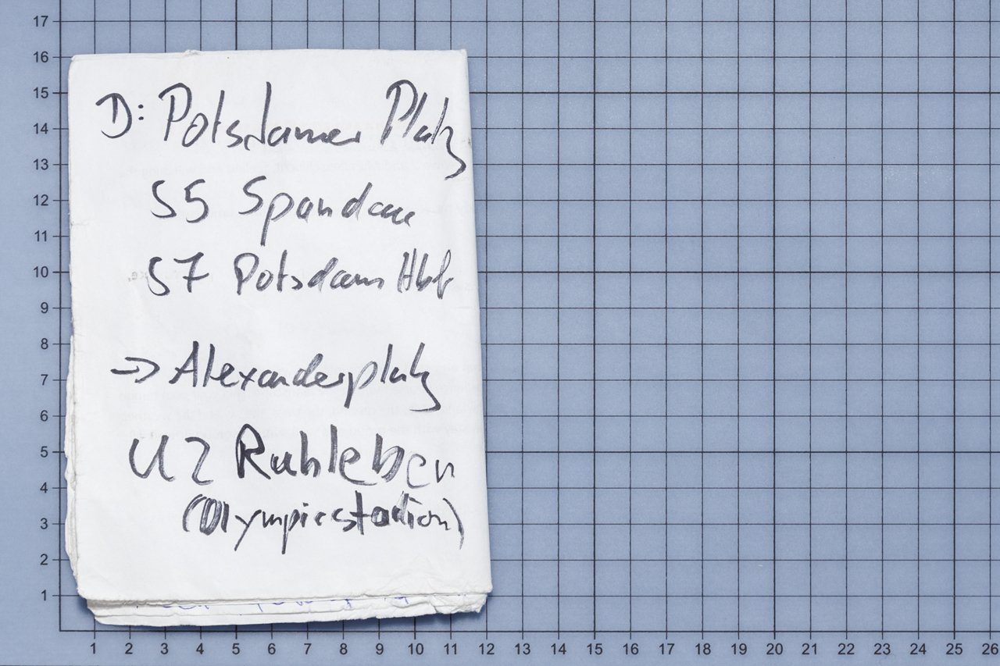
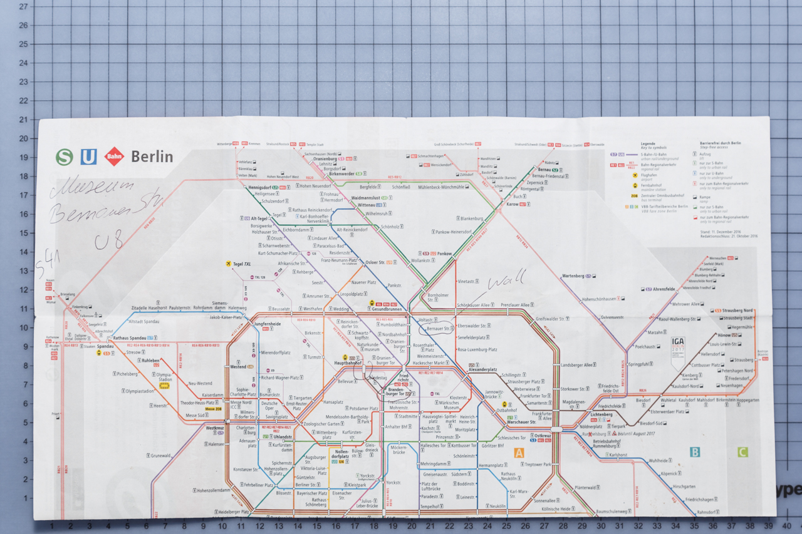
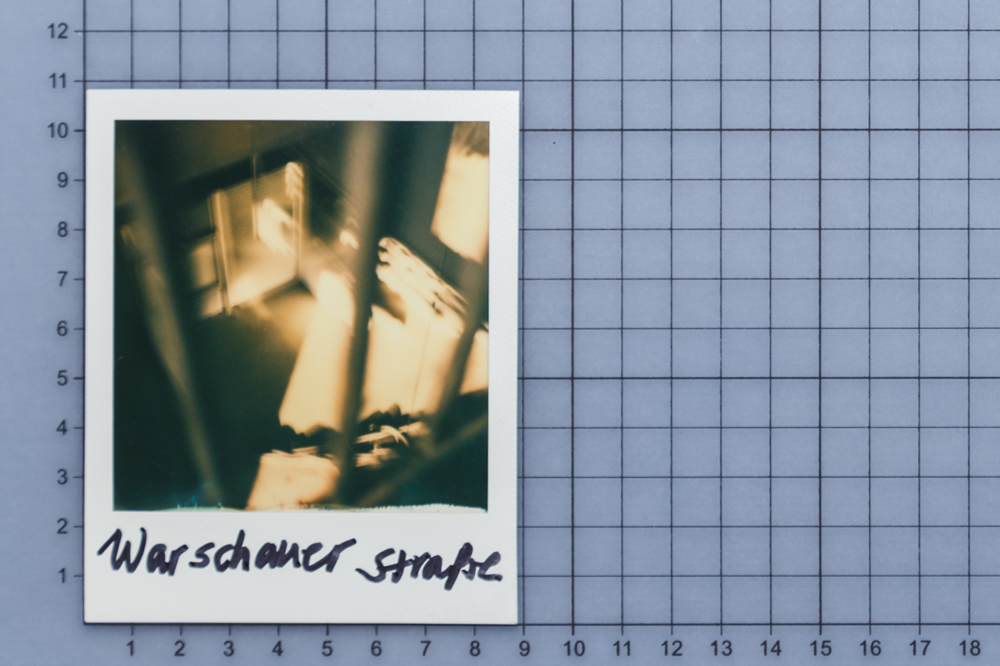
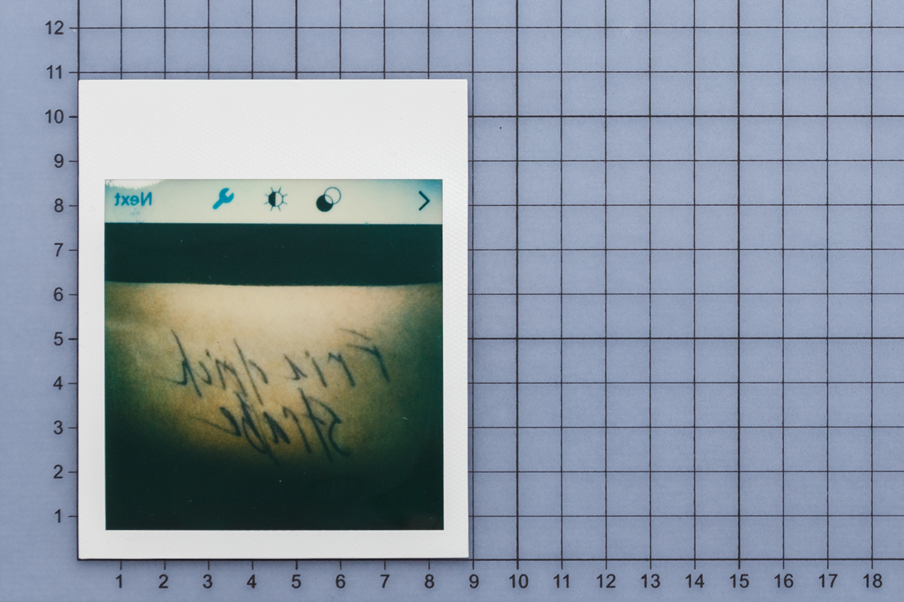
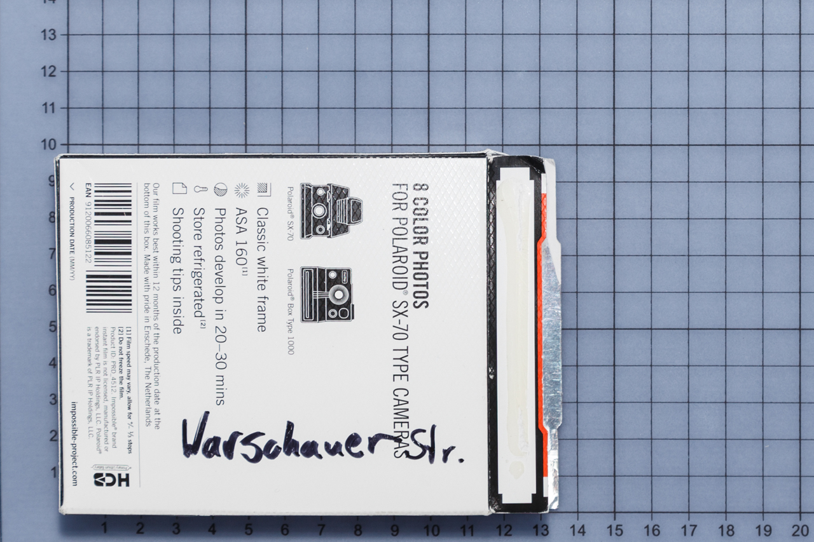

1. The list
Ostkreuz station. About 40 years old man wearing thick framed glasses explained to me in detail how I could get to the wall. I gave him a stack of sheets with our workshop program, which Alex Heide had given us on the 22 of February 2017. He wrote the route on the otherside of it.
2. The map
25 of February 2017. Westkreuz station. I have been standing in the centre of the platform for a pretty long period of time peering into a map. A man, appeared to be in his 50’, walked toward my direction. He gave me his map. I told him, that I wanted to get to the wall. He wrote train numbers on the map and marked stations to switch he also marked some location which he thought are worth visiting as a tourist.
3. The note on the photo
27 of February 2017. Ostkreuz station. A girl in her 20’ wearing black glasses, big scarf and headphones. She mentioned several stations where I could see the wall and I didn't remember any of them and asked her to write them down. She didn't have anything to write on, so I gave her the picture I had made on 26-th of February 2017. It was Ostkreuz written on one side, she wrote Warschauer Straße on the other side of it.
4. The scheme
27 of February 2017. Westkreuz station. A man about 40 years old told me if I wanted to get to the most interesting part of the wall, I had to get to Ostbahnhof station. He took a piece of paper and draw a map. Just before we parted he said: it would be great.

5. The note on the hand
28 of February 2017. Westkreuz station. A young lady with a baby in a baby carrier. I asked her how I could get to the wall. She told me I needed to get to Friedrichstraße. I asked her to write it on my hand. I still don't know if she meant the street or the station.
6. The note on the box
1 of March 2017. Ostkreuz station. Teenager, most probably a student. I asked him how I could get to the wall. He said that the easiest way was to get to the Warschauer Straße. He wrote the name on an empty polaroid cassette box I gave him. He was the first person to sent me to the place I've already been. In that moment I understood that the circle is completed.
